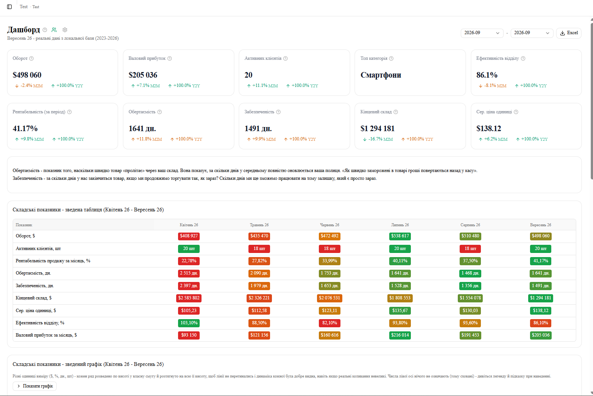

Для категорійних менеджерів і керівників
Продажі й склад — у готових дашбордах, а не в зведених таблицях
Завантажили вивантаження з 1С — отримали дашборди, звіти по клієнтах, ABC-аналіз і якість складу. Без щоденного ручного зведення цифр в Excel.
Працює у браузері · спробувати можна без реєстрації · дані кожної компанії окремі

Що показує програма
Від загальної картини до конкретного клієнта чи товару
Дашборди
- Загальна картина: оборот, валовий прибуток, активні клієнти, рентабельність
- Порівняння місяць-до-місяця і рік-до-року
- Детальний дашборд — дерево Категорія → Серія/Бренд → Менеджер з оборотом, рентабельністю і складом на кожному рівні
Клієнти й продажі
- Статус кожного клієнта: активний, сплячий, втрачений, новий, пасивний
- Історія покупок і коментарі по клієнту
- Сирі рядки продажів для звірки з джерелом
Ефективність менеджерів
- Виконання плану й приріст клієнтів по кожному менеджеру
- Якість відпрацювання списку «Фокус»
- Окрема вага і коефіцієнт для кожного блоку оцінки
Склад і собівартість
- Собівартість проданого і вартість залишку на складі помісячно
- Розбивка по категоріях, підкатегоріях, брендах, серіях і номенклатурі
- Основа для рентабельності й обертаємості на інших звітах
Асортиментна матриця
- Власна матриця категорійного менеджера: план у $ на вузол, бюджет і тарифи
- Собівартість рахується каскадом, факт тягнеться наживо з продажів
- Загальнокомпанійська версія Full — усі менеджери разом, вивантаження в Excel 1-в-1
Аналіз і порівняння
- Аналіз клієнта — від клієнта до конкретної категорії/серії з кольоровою шкалою
- ABC-аналіз — класифікація товарів і клієнтів на групи A, B, C
- Порівняння категорій/серій, якість складу, динаміка моделі чи номенклатури по місяцях
Дані кожної компанії окремі
Своя база даних на компанію — чужих продажів і клієнтів не видно.
Права по ролях
Категорійний менеджер бачить свої категорії, керівник — все і налаштування доступів.
Дані оновлюються з вивантаження
Завантажили файл продажів — звіти й дашборди перерахувались самі.
Клік — і видно деталі
Будь-яка цифра на дашборді розкривається до конкретної номенклатури.
Спробуйте без реєстрації
Тестовий акаунт з прикладами даних
Відкрийте програму і увійдіть тестовими даними нижче — це окрема тестова компанія з прикладами продажів, товарів і клієнтів, не пов'язана з даними жодного реального клієнта.
Це спільний ознайомчий акаунт для всіх відвідувачів — не залишайте в ньому реальні дані бізнесу.
Вартість
Розраховується індивідуально — залежно від обсягу продажів, кількості менеджерів і того, чи потрібен ще й CatMan Pro.
Дізнатись вартість